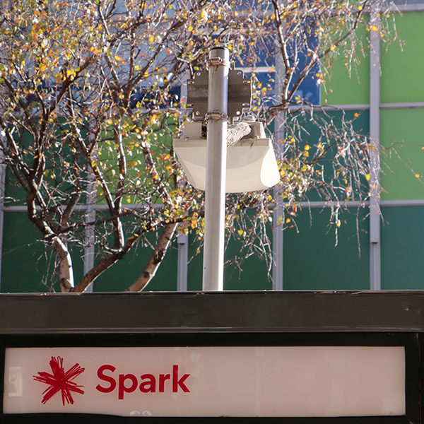

WiFi zones with the service provider Spark are dotted throughout the Wellington CBD. On Cuba Street alone there are two Spark booths situated only 100 metres apart. These booths in particular are only accessible to Spark sim card holders and usually provide only 1 gigabyte of data.

Although this service is reserved for those with a Spark sim card there are other WiFi zones throughout the city with some being free for example the Wellington CBD WiFi. However using any free WiFi service poses its own risks in regards to security and information.
